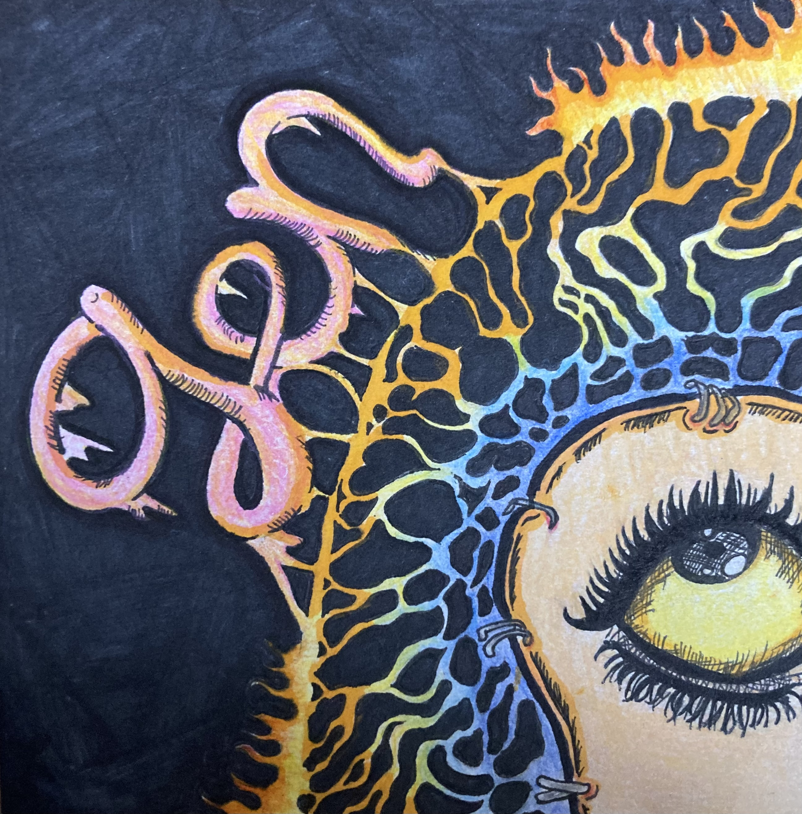
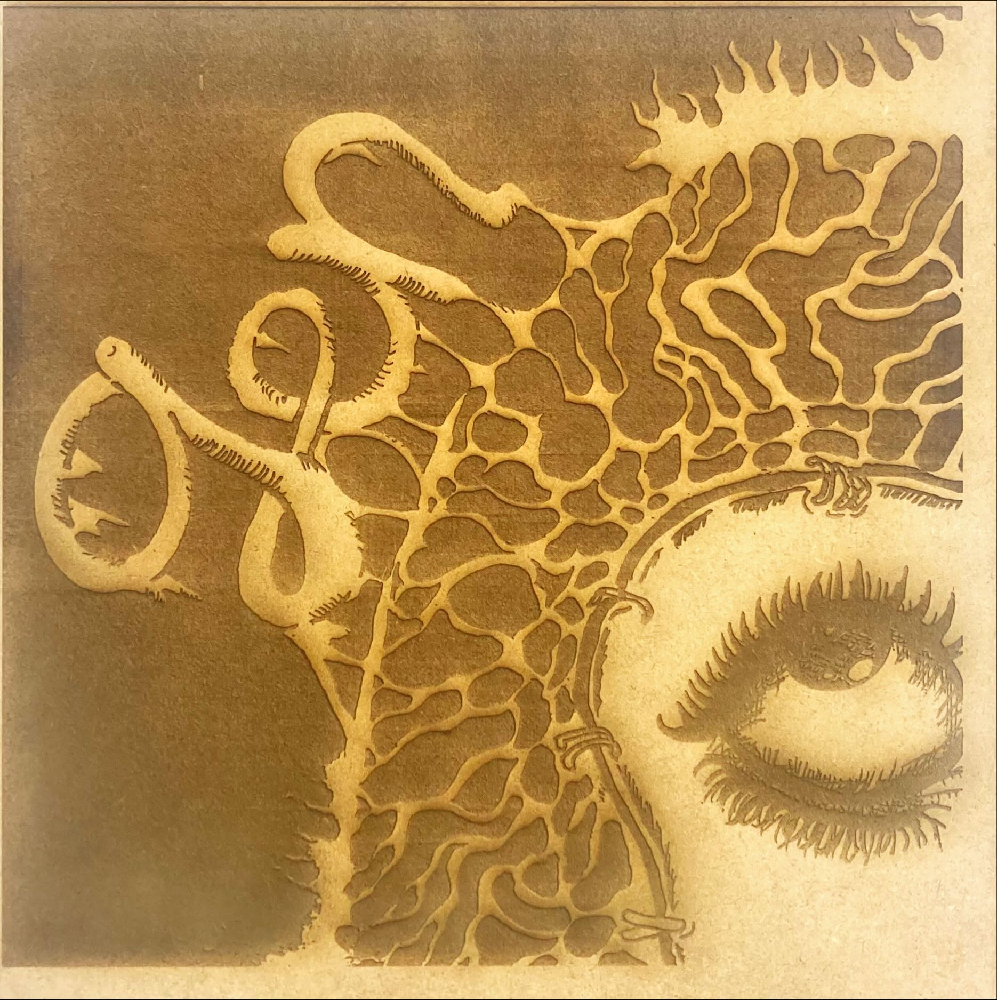
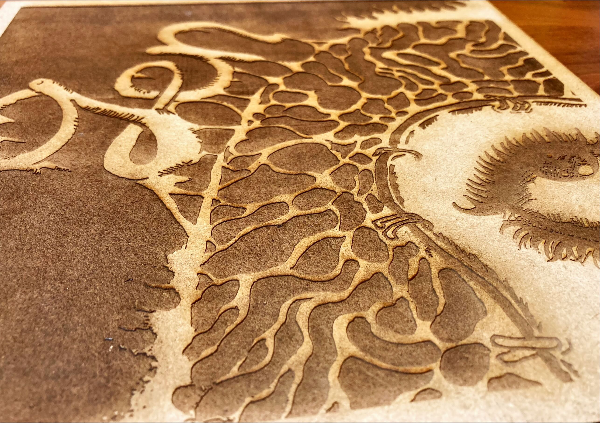

今回は、レーザーカッターを使って自分の絵を彫刻してみます！

こちらの絵を彫刻してみようと思います。まず絵の写真をsvgファイルに返還し、それをファブラボのadobeで編集します。
こちらが実際に彫刻している動画になります。
そしてレーザーカッターで彫刻したのがこちら！

細かい絵なので上手くいくか心配でしたが、そのまま綺麗に彫刻されていたので感動しました！！

この写真を見てわかるように、彫刻されたことによって立体感が生まれました。
まとめ
・この絵は、自分の個性が出ている絵だと思います。見るたびに自分を思い出せる作品を作れて良かったと思います。
・今回の作品は元の絵よりもサイズが大きいため、目立つところに置きたいです。
・絵という二次元の作品から、彫刻という三次元の作品に簡単に進化させることができるという点もレーザーカッターの魅力であると実感しました。